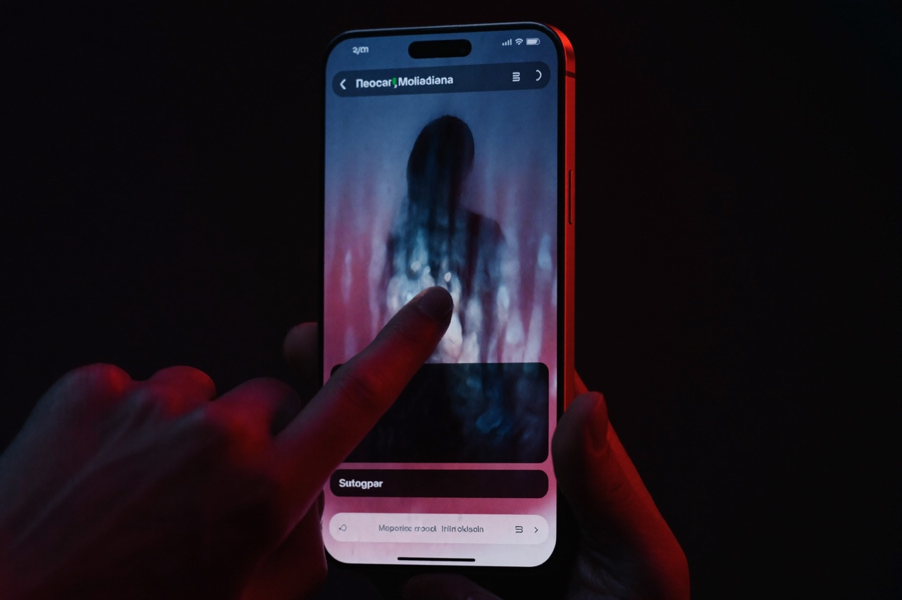
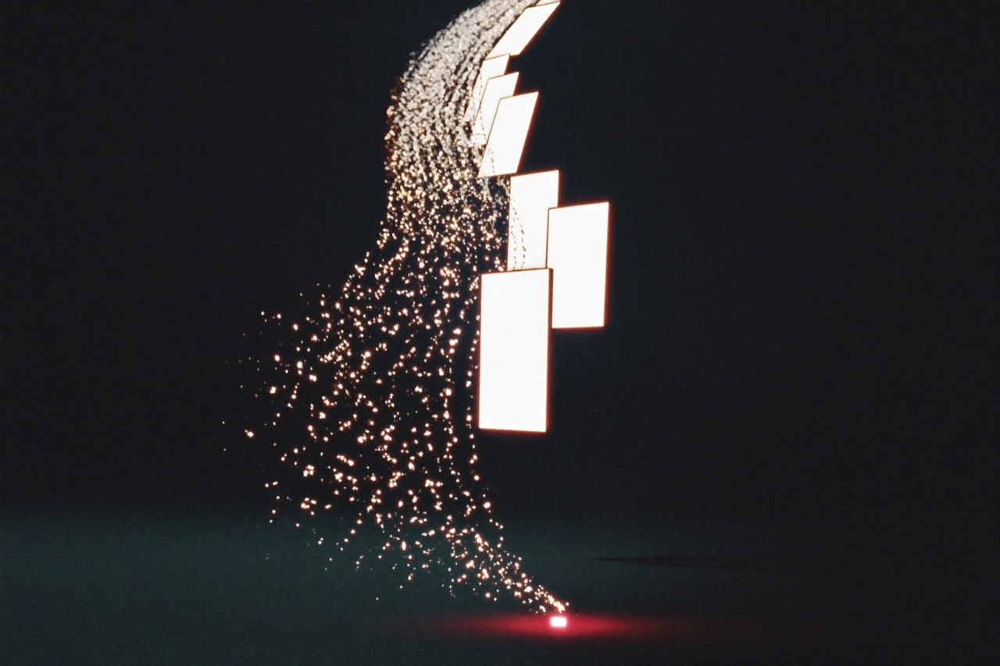
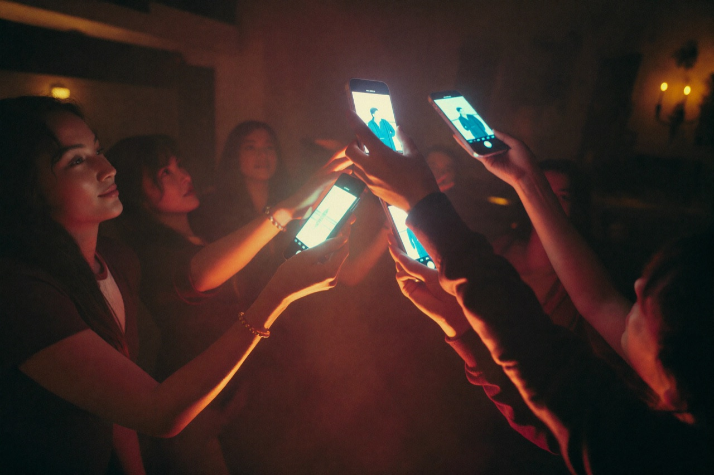

톤티비의 가장 강력한 경쟁력은 텔레그램이라는 거대한 글로벌 인프라 위에서 출발한다는 점이다. 서비스 첫날, 톤티비의 잠재 관객은 이미 10억 명이다.
기존 OTT가 ‘앱스토어 검색 → 다운로드 → 설치 → 회원가입 → 결제정보 입력’이라는 긴 진입 단계를 요구하는 반면, 톤티비는 ‘텔레그램 내 미니앱 실행 → 즉시 무료 시청’으로 그 장벽을 완전히 허문다. 넷플릭스, 디즈니플러스 등 글로벌 대형 OTT가 수년간 막대한 비용을 들여 확보해 온 사용자 접근성을, 톤티비는 텔레그램 미니앱 위에서 처음부터 10억 명 규모로 확보한 채 시작한다.
‘설치 광고’라는 밑 빠진 독
경쟁 숏폼 앱들은 신규 유저를 데려오기 위해 ‘앱 설치 광고’에 매출의 상당 부분을 쏟아붓는다. 설치와 가입이라는 마찰 구간에서 잠재 유저의 대다수가 이탈한다 — 이른바 ‘밑 빠진 독(Leaky Bucket)’이다. 톤티비는 이미 깔려 있는 텔레그램에서 원클릭으로 시청이 시작되므로, 사용자 획득 비용(CAC)이 사실상 0에 수렴한다.

채널이 곧 배급망
텔레그램의 그룹·채널을 통한 자연스러운 입소문 확산은 초기 성장 속도를 극대화한다. 좋아하는 드라마 클립이 채팅방에서 공유되고, 친구는 같은 텔레그램 안에서 한 번의 탭으로 바로 시청에 진입한다. 광고를 사서 외부 트래픽을 끌어오는 것이 아니라, 콘텐츠 자체가 메신저를 타고 유통되는 구조다.

경쟁사가 광고비를 태울 때, 톤티비는 텔레그램 안에서 이긴다. 진입 장벽 0 · 이탈률 0에 도전하는 Seamless 경험. — 톤티비 IR
지역별 앱스토어 승인 절차도 필요 없다. 톤티비는 전 세계 동시 서비스가 가능한 구조 위에서, 텔레그램 생태계의 1억+ 지갑 이용자와 함께 토큰 기반 보상 모델까지 자연스럽게 연결한다.
진입 장벽이 사라진 시장, 그 인프라를 소유하세요
톤티비 시청자 광고 리워드의 20%가 전체 노드에 분배됩니다. 노드 1개 $1,000 · 1차 3,000개 한정.